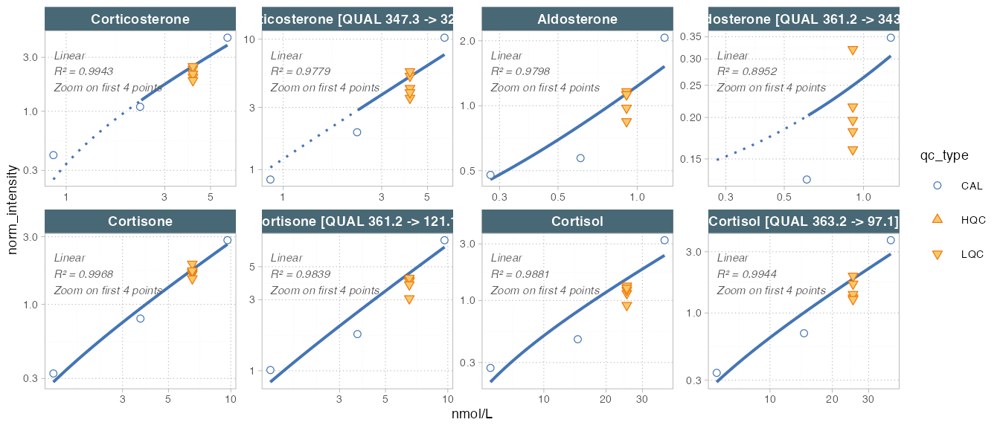

Quantitative assay with Ext. calibration and QC
Source:vignettes/articles/R01_quantms.Rmd
R01_quantms.RmdThis vignette demonstrates a simple workflow for a quantitative targeted assay with external calibration and quality control samples, as used in e.g. in clinical chemistry or environmental analysis.
For this type of analysis the known/target concentrations for the
calibrator and QC samples must be defined in the
QCconcentrations metadata. This also required that
sample_id and analyte_id is defined for the
corresponding analyses in the analysis, and for the features in the
feature metadata tables, respectively.

So, we first import the data and metadata from a MassHunter CSV file and an MsOrganiser template file. The datasets used in this example can be obtained from https://github.com/SLINGhub/midar/tree/main/data-raw.
library(midar)
# Create a new MidarExperiment data object
mexp <- MidarExperiment(title = "Corticosteroid Assay")
# Import analysis data (peak integration results) from a MassHunter CSV file
mexp <- import_data_masshunter(
data = mexp,
path = "QuantLCMS_Example_MassHunter.csv",
import_metadata = TRUE)
#> indexed 0B in 0s, 0B/sindexed 1.00TB in 0s, 3.45PB/s
# Import metadata from an msorganiser template fie
mexp <- import_metadata_msorganiser(
mexp,
path = "datasets/QuantLCMS_Example_Metadata.xlsm",
excl_unmatched_analyses = T, ignore_warnings = T)
#> --------------------------------------------------------------------------------------------
#> Type Table Column Issue Count
#> 1 N Analyses sample_id Not defined for all analyses 8
#> --------------------------------------------------------------------------------------------
#> E = Error, W = Warning, W* = Supressed Warning, N = Note
#> --------------------------------------------------------------------------------------------Next, the raw peak areas are normalized with the corresponding internal standard and then we calculate and plot the regression fits for the external calibration curves.
# Normalize data by internal standards (defined in feature metadata)
mexp <- normalize_by_istd(mexp)
# Calculate calibration results. The regression model and weighting
# can also be specified per feature in the feature metadata
mexp <- calc_calibration_results(
mexp,
fit_overwrite = TRUE, # Set to FALSE if defined in metadata
fit_model = "quadratic",
fit_weighting = "1/x")
# Plot calibration curves
plot_calibrationcurves(
data = mexp, zoom_n_points = 4,
fit_overwrite = TRUE, # Set to FALSE if defined in metadata
fit_model = "linear",
fit_weighting = "1/x",log_axes = T,
rows_page = 2,
cols_page = 4, show_progress = FALSE
)
We also can output a summary of the calibration curve results:
tbl_cal <- get_calibration_metrics(mexp)
tbl_cal
#> # A tibble: 8 × 14
#> feature_id is_quantifier fit_model fit_weighting reg_failed r2 lowest_cal
#> <chr> <lgl> <chr> <chr> <lgl> <dbl> <dbl>
#> 1 Aldosterone TRUE quadratic 1/x FALSE 0.980 0.277
#> 2 Aldosterone… FALSE quadratic 1/x FALSE 0.981 0.277
#> 3 Corticoster… TRUE quadratic 1/x FALSE 0.994 2.28
#> 4 Corticoster… FALSE quadratic 1/x FALSE 0.985 2.28
#> 5 Cortisol TRUE quadratic 1/x FALSE 0.988 5.52
#> 6 Cortisol [Q… FALSE quadratic 1/x FALSE 0.995 5.52
#> 7 Cortisone TRUE quadratic 1/x FALSE 0.997 1.39
#> 8 Cortisone [… FALSE quadratic 1/x FALSE 0.984 1.39
#> # ℹ 7 more variables: highest_cal <dbl>, coef_a <dbl>, coef_b <dbl>,
#> # coef_c <dbl>, lod <dbl>, loq <dbl>, sigma <dbl>After we have inspected the curves and are happy with the quality of the analysis, we can calculate the concentrations for all features in samples using the external calibration curves.
A summary of the QC results (bias and variability) is calculated and shown below. The final concentration data is saved to a CSV file.
# Calculate concentrations for all samples using external calibration
mexp <- quantify_by_calibration(
mexp,
fit_overwrite = FALSE,
include_qualifier = FALSE,
ignore_failed_calibration = TRUE,
fit_model = "quadratic",
fit_weighting = "1/x")
# get a table with QC results (bias and variability)
tbl <- get_qc_bias_variability(mexp, qc_types = c("HQC", "LQC"))
# Save a table with final concentration data
save_dataset_csv( mexp,
path = "corticosteroid_conc.csv",
variable = "conc",
filter_data = FALSE)
print(tbl)
#> # A tibble: 8 × 9
#> feature_id sample_id qc_type n conc_target conc_mean conc_sd cv_intra
#> <chr> <chr> <chr> <int> <dbl> <dbl> <dbl> <dbl>
#> 1 Aldosterone HQC HQC 5 9.74 8.65 1.14 13.1
#> 2 Aldosterone LQC LQC 5 0.911 0.843 0.132 15.7
#> 3 Corticosterone HQC HQC 5 77.5 75.5 2.98 3.95
#> 4 Corticosterone LQC LQC 5 4.11 3.64 0.378 10.4
#> 5 Cortisol HQC HQC 5 472 495. 68.3 13.8
#> 6 Cortisol LQC LQC 5 25.2 20.0 2.40 12.0
#> 7 Cortisone HQC HQC 5 119. 114. 6.73 5.89
#> 8 Cortisone LQC LQC 5 6.52 6.23 0.504 8.08
#> # ℹ 1 more variable: bias <dbl>